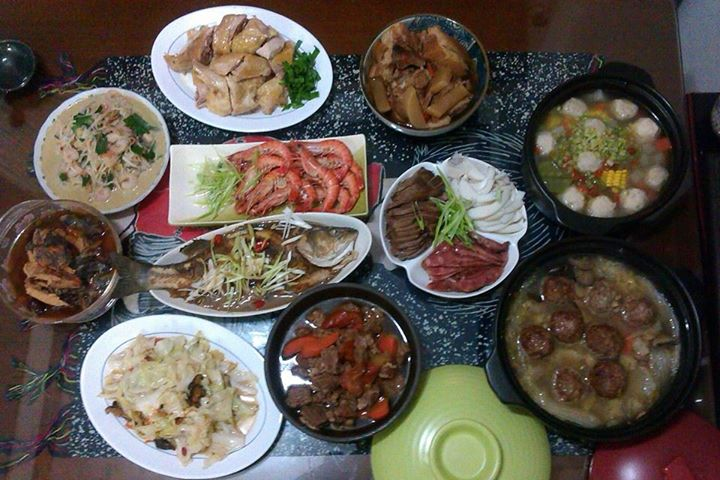
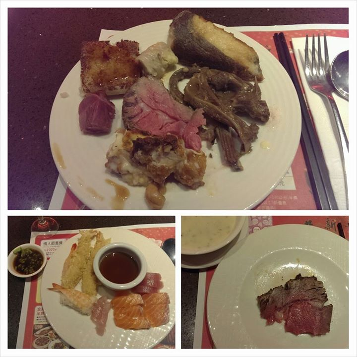
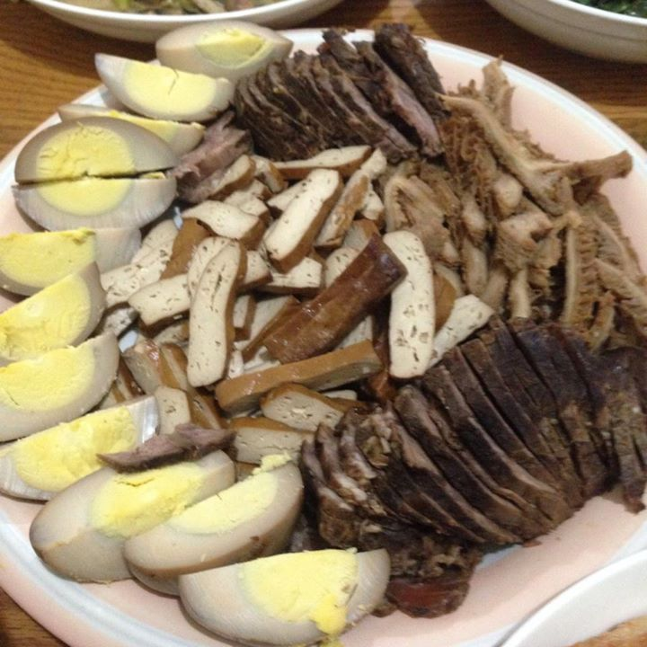

2018
2017
2016
2015
2014
2013
2014
進擊の年夜飯
四個人的日式年夜飯@德國
吃一！！
我家Moly又來向大家拜年嚕~有誰想要發個紅包給他嗎？我很樂意代收XDD
要把這些拿去老家集合了XDD 年菜英雄聯盟即將登場
年夜飯當然要先請祖先享用…
大家新年快樂啊～
我家除夕都吃的很樸素簡單~ 就跟平常差不多，過年後大家族聚餐會越吃越油越多也越胖XD 大家新年快樂啦！

弟弟上班，三人份年夜飯超澎湃XD
16人分大人桌小孩桌還有湯桌～ 新年快樂！
我煮的咖喱雞^^
新年快樂！
羊肉爐吃到飽
沙鍋魚頭，獅子頭，滷豬腳及像山一樣高的炒米粉，30人份的年夜飯開動~~
你知道嗎？ 今天是初二回娘家的日子，很多村落會請 Zone Pro Site 來做外燴宴請回來的女兒們。
第一次煮年夜飯， 準備拜拜什麼的根本戰場！ 新年快樂 :)
你知道嗎？ 過年要吃蘿蔔糕，是因為蘿蔔又叫菜頭，因此吃蘿蔔糕有取得好彩頭的吉祥意思。
愛立刻死的奇幻套餐，讓大家久等了...
大家好，今天是小年夜囉！明天讓我們一起進擊吧！
大家新年快樂～
有始以來第一次過年沒吃火鍋••••

高雄大八大飯店
初四傅家的團圓飯；春節結束，初五開工大吉！
狗年夜飯之披薩
耶!! 神明吃飽換我們開動囉~~~
無題
初二 第三代桌
下午茶，五倍桶仔雞。
家人圍爐！ 重點是下面那盤^^
初二再吃一頓～
剛才好像沒Po成功，再Po一次（嗝
進擊の高麗菜（獵捕等級2）
開~~~桌~~~~ 繼續走溫馨家庭菜風格
山野味烤年糕～
吉祥話：汪汪汪喵（？
初二 第四代桌
只照了三道我煮的~蝦、白菜獅頭、煎白鯧 大家馬年行大運! NEIGHHHHHHHH :D
哥習慣除夕青菜呷，初二姑姑們回來才"切操"。 大家都很想贏是怎樣...
今年晚了點 四點半開吃 祝大家新年快樂!!
神明還在吃 有三道自己煮的
澎湃的年貨
初二 第二代桌
大家安安！小教學： 在「標記地點」的地方也可以直接選進擊の年夜飯，自動把照片加入活動中喲！
昨天的佛跳牆和魚翅排骨
新年快樂喲～
來遲了～ 四人份、年年都餘太多太多的年夜飯 中間空是還沒熱好的佛跳牆的位置:P
傳統過年佳餚配上石板烤COSTCO牛肉
初二 素食桌
今年的活動海報是由去年的參賽者台灣林書豪 Chen Johnny 在去年的活動中上傳的喲！ 圖為 Molly 與台灣林書豪的年夜飯
吃換嘍！
祝大家馬年行大運～
無題
無題
無題
無題
無題
無題
無題
無題

無題
無題
無題
無題
無題
無題
無題
無題
無題
無題